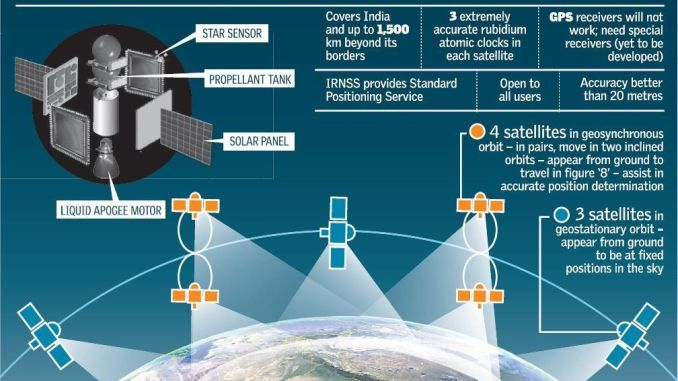

As part of the project, the Indian Space Research Organisation (ISRO) opened a new satellite navigation centre within the campus of ISRO Deep Space Network (DSN) at Byalalu, in Karnataka on 28 May 2013. A network of 21 ranging stations located across the country will provide data for the orbital determination of the satellites and monitoring of the navigation signal.A goal of complete Indian control has been stated, with the space segment, ground segment and user receivers all being built in India. Its location in low latitudes facilitates a coverage with low-inclination satellites. Three satellites will be in geostationary orbit over the Indian Ocean. Missile targeting could be an important military application for the constellation.
Fig.1 Overview of IRNSS